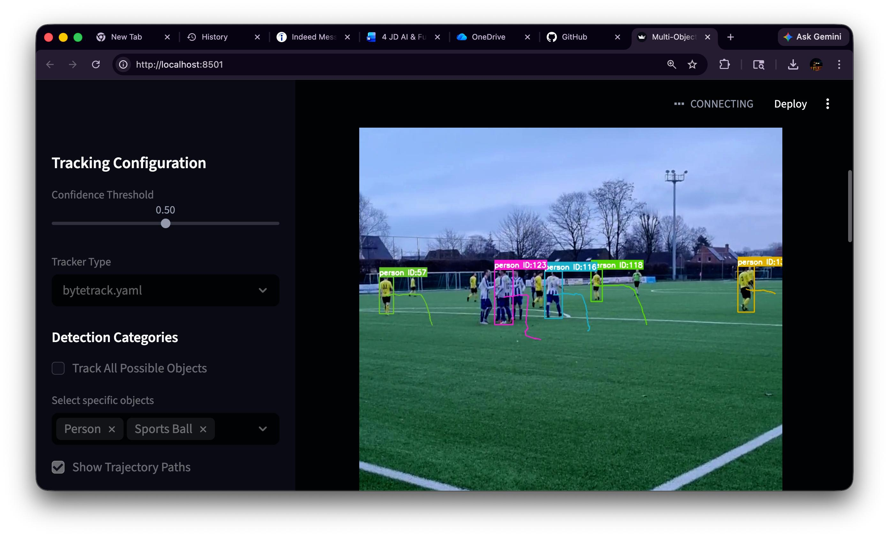

Computer Vision Pipeline
Multi-Object Detection &
Persistent ID Tracking
A high-performance pipeline powered by YOLOv8 and ByteTrack for real-time subject localization and historical trajectory mapping.
View Source Code
Note: App requires Python backend to run live.
Tracking Pipeline Output

YOLOv8 Core
Utilizing state-of-the-art detection for ultra-fast and accurate object localization.
ByteTrack
Advanced data association for stable ID persistence through complex occlusions.
Trajectory
Visual path tracing to analyze motion patterns and subject behavior over time.